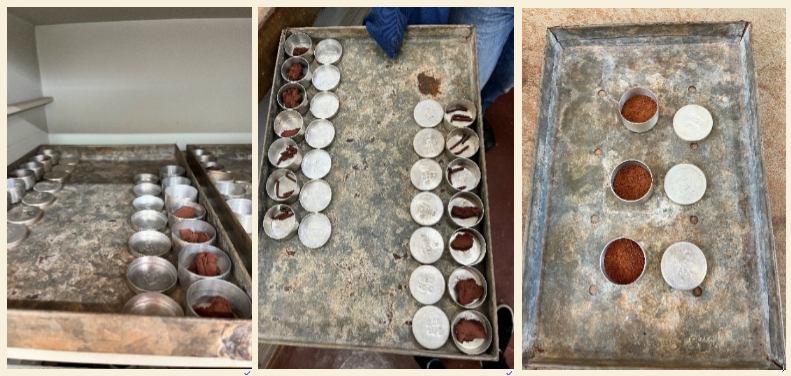
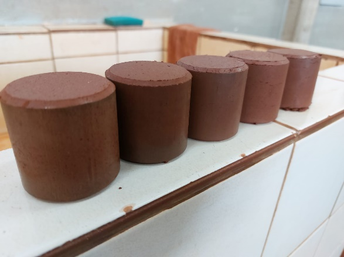

Solo-cinza para pavimentos rodoviários
Ash soil for road pavements
Maisa Sabugari ESCOBAR1; Jairo Salim Pinheiro de LIMA2
1 Engenharia Civil, Universidade Estadual Paulista “Júlio de Mesquita Filho”, Unesp – maisa.sabugari@unesp.br
2 Engenharia Civil, Universidade Estadual Paulista “Júlio de Mesquita Filho”, Unesp – jairo.lima@unesp.br
RESUMO
A indústria de celulose produz grande quantidade de resíduos e o descarte inadequado desses materiais gera impactos ao meio ambiente. A estabilização com adição de cinzas do cavaco de eucalipto (CCE) da indústria de celulose pode melhorar as propriedades do solo. O objetivo dessa pesquisa foi avaliar a adição de CCE na estabilização de um solo de comportamento laterítico e a sua aplicação em pavimentos rodoviários. Foram moldados corpos-de-prova sem adição de cinza e com 20% de adição em relação ao peso seco do solo. Os ensaios de classificação TRB e MCT demonstraram que o solo é A–4 (5), com comportamento laterítico. Realizou-se o ensaio de compactação com energia intermediária para obter a máxima massa específica aparente seca e o teor ótimo de umidade, cujos valores foram, respectivamente, 2,020 g/cm³ e 11,4%, para o solo sem cinza, e 1,976 g/cm³ e 11,85%, para o solo com 20% de cinza. Com 84 dias de cura, o CBR do solo foi de 24,1% e do solo-cinza foi de 40,73%, observando um acréscimo no valor do CBR ao longo do tempo com a adição de cinza e indicando que este pode ser usado até como sub-base para pavimentos rodoviários.
Palavras-chave: solo-cinza; estabilização; pavimentação.
ABSTRACT
The pulp industry generates a large amount of waste, and the improper disposal of these materials impacts the environment. Stabilization with the addition of eucalyptus chip ash (ECA) from the pulp industry can improve soil properties. The objective of this research was to evaluate the addition of ECA in the stabilization of a lateritic soil and its application in road pavements. Specimens were molded without ash addition and with 20% ash addition relative to the soil's dry weight. The TRB and MCT classification tests demonstrated that the soil is A-4 (5) with lateritic behavior. A compaction test with intermediate energy was performed to obtain the maximum dry unit weight and the optimum moisture content, which were 2.020 g/cm³ and 11.4%, respectively, for the soil without ash, and 1.976 g/cm³ and 11.85% for the soil with 20% ash. After 84 days of curing, the CBR of the soil was 24.1%, while the soil-ash mixture reached 40.73%. An increase in the CBR value over time with the addition of ash was observed, indicating that it can be used even as a subbase for road pavements.
Keywords: ash soil; stabilization; paving.
Introdução
A preocupação com a queima de materiais derivados do petróleo e o consequente aumento das emissões de gases poluentes impulsionam a busca por materiais alternativos e sustentáveis. As cinzas geradas pela queima de biomassa têm sido bastante utilizadas na construção civil, por serem provenientes de fontes de energia renováveis.
Muitas indústrias empregam a madeira de eucalipto, na forma de lenha, cascas ou cavacos, como fonte de energia para as caldeiras. A maior parte das cinzas resultantes da queima do cavaco de eucalipto é destinada para aterros, ocupando grandes áreas, ou para melhorar a qualidade agrícola de solos em lavouras. Quando são descartadas de maneira inapropriada, as cinzas causam impactos negativos ao meio ambiente.
Muitas vezes, para as indústrias, é difícil determinar o destino final dos resíduos produzidos. Entretanto, é plausível destacar que eles podem ser reutilizados, principalmente na estabilização de solos para a construção de estradas.
Na construção de rodovias, é importante considerar as propriedades e a eficiência do solo que será utilizado. Esse solo é geralmente obtido no próprio local ou em áreas próximas da obra. Caso o solo não atenda às exigências necessárias, pode ser realizada a estabilização.
A utilização de cinzas da queima da biomassa em pavimentação gera potencial para reduzir os custos às indústrias em razão do manejo para estocagem e descarte do material, amplia a possibilidade de uso dos solos locais, reduz a pressão por novas áreas de empréstimos de materiais naturais, o número de viagens e o volume de terra movimentado.
O pavimento rodoviário é uma estrutura composta por várias camadas, construído sobre o subleito, que é a superfície final da terraplenagem. Cada uma dessas camadas é formada por materiais específicos, que devem possuir características, como: resistência, deformação e expansão.
O pavimento deve suportar os esforços verticais e horizontais, resistir às condições climáticas e proporcionar boas condições de tráfego aos usuários. O revestimento é a camada que recebe diretamente as cargas, distribuindo-as para as demais camadas, de modo a compatibilizar estas cargas com a qualidade de suporte do subleito.
O Brasil é o segundo maior produtor de celulose do mundo e produziu cerca de 25 milhões de toneladas em 2022 (IBÁ, 2022), ilustrado na Figura 1A. A produção de celulose e de papel segue em expansão. Vale destacar que, para cada 100 toneladas de celulose produzida, são geradas 48 toneladas de resíduos.
O Brasil é o maior exportador de celulose do mundo. Em relação ao destino da produção, 77% vão para o mercado externo e 23% ficam o mercado interno. As regiões com maior cultivo de eucalipto estão representadas na Figura 1B. As áreas de cultivo de eucalipto para a produção de celulose experimentam crescimento constante e significativo. Essa expansão resulta também do clima favorável, o que implica em investimentos de diversas indústrias.
Figura 1. Principais produtores de celulose do mundo (A), Distribuição da área com plantios de eucalipto por região (B).
Fonte: IBÁ (2022).
Diversos tipos de rejeitos e resíduos são gerados na produção da celulose: sólidos (casca, cinzas, dregs, grits, lama cal, etc), líquidos e gasosos. Como a matéria-prima para a produção de celulose é a madeira, os resíduos têm elevado teor de matéria orgânica.
É fundamental examinar as melhorias resultantes da estabilização de solos lateríticos com cinzas de cavaco de eucalipto, avaliando a sua potencial aplicação em pavimentos rodoviários e a redução da quantidade de material descartado, contribuindo de maneira sustentável, ecológica e econômica.
Metodologia
As amostras de solo foram obtidas em jazida localizada no município de Ilha Solteira, no estado de São Paulo.
A cinza do cavaco de eucalipto foi fornecida pela empresa Suzano S.A., que se situa no município de Três Lagoas, no estado do Mato Grosso do Sul, distante 66 km de Ilha Solteira.
A metodologia consiste nas classificações TRB (Transportation Research Board) e MCT (Miniatura, Compactado, Tropical) do solo. O solo foi submetido aos seguintes ensaios:
• determinação do limite de plasticidade - NBR 7180 (ABNT, 2016);
• determinação do limite de liquidez - NBR 6459 (ABNT, 2016).
Os corpos-de-prova foram moldados sem adição de cinza e com 20% de adição em relação ao peso seco do solo. Realizaram-se os ensaios de Mini-Proctor com energia intermediária, de Mini-CBR com imersão e de expansão.
Ensaio de Mini-Procotor
As amostras foram preparadas com 5 teores crescentes de umidade, colocadas em sacos plásticos durante 24h e, depois, compactadas com energia intermediária. Depois, os corpos-de prova foram levados à estufa por 24h para obter a massa específica e o teor de umidade. Pela curva de compactação, obteve-se, para cada amostra, o teor ótimo de umidade e a máxima massa específica aparente seca.
Mini-CBR (DNER-ME 254/97) com imersão e expansão
Os corpos-de-prova foram moldados com teor de umidade ótima e, depois, compactados. Eles ficaram por um período de cura de 0, 7, 14, 28 e 84 dias, em câmara úmida. Em seguida, eles foram imersos em água por 20h e submetidos ao ensaio de penetração. Durante o período de imersão, foi medida a expansão das amostras.
Resultados e Discussão
Realizaram-se os ensaios de caracterização do solo (Figura 2), para determinar o Limite de Plasticidade, o Limite de Liquidez e as classificações TRB e MCT do solo. Os resultados obtidos estão resumidos na Tabela 1.
Figura 2. Ensaios de caracterização do solo.

Fonte: Elaborado pelos autores.
Tabela 1. Classificação do solo.
| Classificação MCT | Limite de Liquidez (%) | Limite de Plasticidade (%) | Classificação TRB |
|---|---|---|---|
| Solo de comportamento laterítico | 20,7 | 15,2 | A-4(5) |
Fonte: Elaborado pelos autores.
Neste caso, o solo apresentou comportamento laterítico. Posteriormente, foi feita a compactação com energia intermediária para o solo e para o solo-cinza, com adição de 20% de cinza. A Figura 3 mostra etapas do ensaio de compactação. A curva de compactação para cada amostra está ilustrada nas Figuras 4 e 5, da massa específica aparente seca (\(\rho\)) em função do teor de umidade (\(W\)).
Figura 3. Ensaio de compactação com energia intermediária

Fonte: Elaborado pelos autores.
Figura 4. Curva de compactação do solo sem cinza.
Fonte: Elaborado pelos autores.
Figura 5. Curva de compactação do solo com 20% de cinza.
Fonte: Elaborado pelos autores.
A Figura 6 ilustra a comparação das curvas de compactação das duas amostras.
Figura 6. Comparação das curvas de compactação.
Fonte: Elaborado pelos autores.
A Tabela 2 mostra os resultados obtidos de máxima massa específica aparente seca e teor ótimo de umidade para as duas amostras.
Tabela 2. Resultados obtidos no ensaio de mini-Proctor.
| Amostras | W ótima (%) | Massa específica aparente seca máxima (g/cm³) |
|---|---|---|
| Am-0% | 11,40 | 2,020 |
| Am-20% | 11,85 | 1,976 |
Fonte: Elaborado pelos autores.
Observa-se pequena redução no valor de \(\rho_{máx}\), contudo manteve-se próximo ao valor de referência. Em contrapartida, o valor da umidade ótima aumentou com o acréscimo de cinza.
A cinza apresenta granulometria próxima à das argilas e dos siltes, com grãos menores que os do solo. Devido à distribuição granulométrica, com a adição de cinza ao solo, ocorre um rearranjo da estrutura, com aumento da área superficial dos grãos, implicando na necessidade de acréscimo de água para a compactação do solo-cinza. Quanto maior a área superficial, maior será a capacidade de união entre as partículas e a retenção de água.
Após obter os parâmetros de compactação, realizou-se o ensaio de mini-CBR, após 20 horas submerso. As Figuras 7 e 8 apresentam os valores de CBR das amostras em função do tempo de cura.
Figura 7. CBR do solo sem cinza em função do tempo de cura.
Fonte: Elaborado pelos autores.
Figura 8. CBR do solo com 20% de cinza em função do tempo de cura.
Fonte: Elaborado pelos autores.
O CBR inicial da amostra com 20% de cinza foi de 13,53%, enquanto o valor final, após 84 dias de cura, foi de 40,73%. Percebe-se elevado ganho da capacidade de suporte. Esse aumento ocorreu devido ao melhor empacotamento dos grãos. Para o solo sem cinza, os resultados iniciais e finais obtidos foram de, respectivamente, 23,4% e 24,1%, verificado que houve pequeno acréscimo. A Figura 9 ilustra a comparação dos gráficos de CBR das duas amostras.
Figura 9. Comparação do CBR em função do tempo de cura.
Fonte: Elaborado pelos autores.
Com 84 dias de cura, o CBR do solo sem cinza foi de 24,1% e do solo-cinza foi de 40,73%. O ganho na capacidade de suporte corresponde à 69% com a adição de 20% de cinza.
Durante a imersão, foi medida a expansão dos corpos-de-prova, conforme o tempo de cura (Figura 10).
Figura 10. Comparação da expansão das amostras.
Fonte: Elaborado pelos autores.
Verificou-se que, ao longo do tempo, a expansão do solo com 20% de cinza foi menor que a do solo sem cinza. Por ser um solo de comportamento laterítico, portanto pouco expansivo, as amostras apresentaram expansão menor que 1% em todos os casos. Em 84 dias, ambos apresentaram expansão nula.
Conclusão
A cinza de cavaco de eucalipto atuou preenchendo os poros do solo, uma vez que apresentou granulometria inferior à do solo estudado. No ensaio de compactação, observou-se que, para a amostra com 20% de cinza, ocorreu o aumento do teor de umidade, que pode ser explicado pelo aumento da área superficial com a adição das partículas finas.
Em 84 dias, a amostra com 20% de cinza obteve um ganho de CBR de 201% em relação ao valor inicial de referência, enquanto o solo sem cinza apresentou acréscimo de apenas 3%. Ao comparar os valores finais das duas amostras (0% e 20%), notou-se que solo-cinza apresentou resultado mais expressivo, com ganho de CBR de 69% em relação ao solo sem adição de cinza.
Ao longo do tempo de cura, a amostra com 20% de cinza apresentou valores de expansão menores em relação ao solo de referência. Porém, em 84 dias, ambos apresentaram expansão nula.
Em razão dos parâmetros estudados, é oportuno destacar que a adição de cinza é muito vantajosa, pois proporcionou o incremento da capacidade de suporte do solo e do seu desempenho mecânico. O solo-cinza pode ser indicado até como sub-base para pavimentos rodoviários.
Dessa forma, confirma-se que a adição de cinza é viável à pavimentação rodoviária, com consequências favoráveis ao meio ambiente. Dentre os parâmetros capazes de sustentar esta afirmação, destacam-se: redução do descarte de resíduos sólidos, aproveitamentos dos rejeitos como material de construção e melhoria nas propriedades geotécnicas do solo local.
Referências
ABDULWAHAB, R. et al. The Effects of Wood ash on the Geotechnical Properties of Lateritic Soil. USEP: Journal of Research Information in Civil Engineering, v. 15, n. 1, p. 1986-1995, 2018.
BELLOTE, A. F. J. et al. Resíduos da indústria de celulose em plantios florestais. Boletim de Pesquisa Florestal, Colombo, v. 37, p.99-106. 1998.
BERNUCCI, L. B. et al. Introdução. In: BERNUCCI, L. B. et al. Pavimentação asfáltica: formação básica para engenheiros. Rio de Janeiro: Petrobrás: Abeda, 2008. 504p. cap 1, p.9-24.
INDÚSTRIA BRASILEIRA DE ÁRVORES – IBÁ. Relatório Anual de 2023. São Paulo: IBÁ.
MEHTA, P. K.; MONTEIRO, P. J. M. Concreto: microestrutura, propriedades e materiais. 3.ed. São Paulo: IBRACON, 674 p, 2008.
MT - Departamento Nacional de Estradas de Rodagem - DNER-ME 180/94: Solos estabilizados com cinza volante e cal hidratada - determinação da resistência à compressão simples. Rio de Janeiro. 1994.
MT - Departamento Nacional de Estradas de Rodagem - DNER-ME 228/2023: Solos - compactação em equipamento miniatura. Rio de Janeiro. 2023. 14 p.
MT - Departamento Nacional de Estradas de Rodagem – DNER-ME 254/2023: Solos compactados em equipamento miniatura – Mini-CBR e expansão. Rio de Janeiro. 2023, 14p.
RESENDE, D. S. Estudo do efeito da incorporação de cinzas de cavaco de eucalipto como material cimentício suplementar. 2013. Tese (Doutorado em Engenharia de Materiais) – Universidade Federal de Ouro Preto, Minas Gerais, 2013.
SILVA, M. J. Reforço de solos utilizados em base e sub-base de pavimentos rodoviários com cinza com alto teor de cálcio. Tese (Doutorado em Geotecnia) – Universidade Federal de Ouro Preto, Minas Gerais, 2017.
SOUZA, M. L. Pavimentação rodoviária. Rio de Janeiro: Livros Técnicos e Científicos Ed, 1980.
VICENTE, G. O. Estabilização de solo com adição de resíduo de celulose para aplicação em pavimentação rodoviária. 2022. Tese (Mestrado em Engenharia Civil) – Universidade Estadual Paulista “Júlio de Mesquita Filho”, Unesp, São Paulo, 2022.